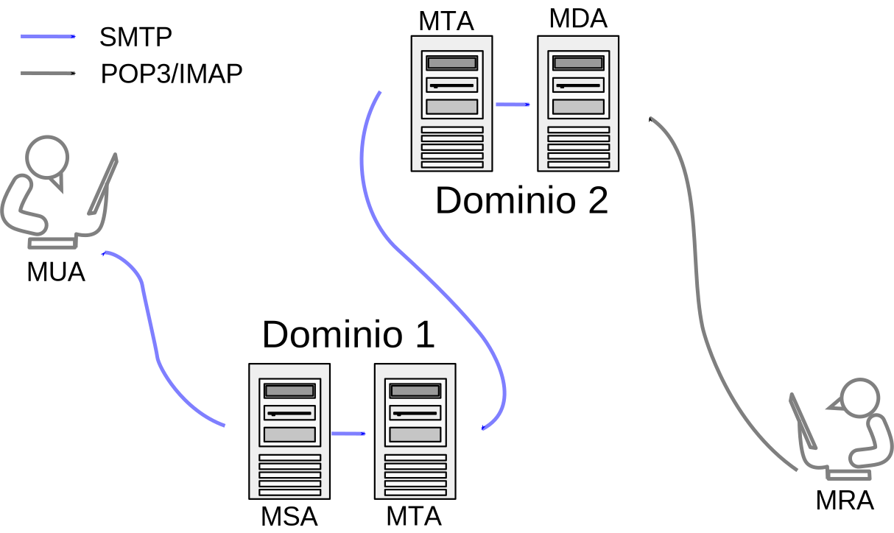

Mail¶
Por hacer
Separar SMTP y RFC 822?
Para entenderlo bien creo que habría que saberse un poco la historia de cómo fue evolucionando porque es como que siempre se fueron corrigiendo cosas, sobre todo para intentar mejorar la seguridad, disminuir el SPAM, impedir el spoofing, etc.
- Las direcciones de mail llevan el nombre de usuario seguido de arroba y el nombre de dominio.
- Los servidores utilizan el record MX del protocolo DNS para encontrar a los servidores hacia dónde enviar los correos.
- Existe el estándar SMTP que establece cómo se intercambian los correos, el formato del correo en sí está definido en las RFCs 822 y 1049. Finalmente existen los protocolos POP3 e IMAP que permite a los clientes obtener correos desde su servidor de correo.
- El formato de correo era originalmente ASCII de 7 bits con el bit superior en cero, más adelante se define el estándar MIME (Multipurpose Internet Mail Extensions) que permite codificar texto y datos binarios en ASCII de 7 bits.
- El envío de los correos se realiza directamente desde la PC del usuario usando SMTP. El mensaje llega hasta una casilla de correo en un servidor de correo y es descargado en la PC del destinatario usando el protocolo POP3 o IMAP.
- POP3 está pensado para descargar los correos desde un solo dispositivo, es muy básico y normalmente los mensajes on borrados de la casilla de correo luego de la descarga. IMAP está pensado para ser utilizado en línea desde varios dispositivos, ya que permite solicitar mensajes específicos, ordenar y mantener los mails en la casilla de correo.
Hay distintos agentes (programas/servidores), al final hay servidores que son más de una cosa a la vez pero la división sería la siguiente:
- Mail User Agent (MUA): Es un cliente de correo, es el programa que usa el usuario.
- Mail Submission Agent (MSA): Recibe correos desde un MUA y lo envía a un MTA. Es el primer servidor de la cadena y es recibe sólo correos de MUAs autorizados.
- Mail Transfer Agent (MTA): Transfiere correos de un agente a otro usando SMTP, recibe correos desde MSAs o MTAs potencialmente desde otros dominios.
- Mail Delivery Agent (MDA): Recibe mensajes desde un MTA y lleva los mensajes a una casilla de correo local de un usuario. Hace también por ejemplo filtrado de SPAM y separación de correos en carpetas.
- Mail Retrieval Agent (MRA): Solicita mensajes a un MDA y los muestra al usuario. Generalmente es el mismo software que el MUA.
Todos los pasos de la cadena menos el último usan SMTP. El último paso usa POP3 o IMAP:
[MUA] --SMTP--> [MSA] --SMTP--> [MTA] --SMTP--> [MTA] --SMTP--> [MDA] --POP3/IMAP--> [MRA]
Explicación desde Wikipedia¶
Diagrama modificado por mí, original de Ale2006-from-en [CC BY-SA 3.0].
Email is submitted by a mail client (mail user agent, MUA) to a mail server (mail submission agent, MSA) using SMTP on TCP port 587. Most mailbox providers still allow submission on traditional port 25. The MSA delivers the mail to its mail transfer agent (mail transfer agent, MTA). Often, these two agents are instances of the same software launched with different options on the same machine. Local processing can be done either on a single machine, or split among multiple machines; mail agent processes on one machine can share files, but if processing is on multiple machines, they transfer messages between each other using SMTP, where each machine is configured to use the next machine as a smart host. Each process is an MTA (an SMTP server) in its own right.
The boundary MTA uses the Domain name system (DNS) to look up the mail exchanger record (MX record) for the recipient’s domain (the part of the email address on the right of @). Based on the target host and other factors the MTA selects an exchange server, the MTA connects to the exchange server as an SMTP client.
Message transfer can occur in a single connection between two MTAs, or in a series of hops through intermediary systems. A receiving SMTP server may be the ultimate destination, an intermediate «relay» (that is, it stores and forwards the message) or a «gateway» (that is, it may forward the message using some protocol other than SMTP). Each hop is a formal handoff of responsibility for the message, whereby the receiving server must either deliver the message or properly report the failure to do so.
Once the final hop accepts the incoming message, it hands it to a mail delivery agent (MDA) for local delivery. An MDA saves messages in the relevant mailbox format. As with sending, this reception can be done using one or multiple computers, but in the diagram above the MDA is depicted as one box near the mail exchanger box. An MDA may deliver messages directly to storage, or forward them over a network using SMTP or other protocol such as Local Mail Transfer Protocol (LMTP), a derivative of SMTP designed for this purpose.
Once delivered to the local mail server, the mail is stored for batch retrieval by authenticated mail clients (MUAs/MRAs). Mail is retrieved by end-user applications, called email clients, using Internet Message Access Protocol (IMAP), a protocol that both facilitates access to mail and manages stored mail, or the Post Office Protocol (POP) which typically uses the traditional mbox mail file format. Webmail clients may use either method, but the retrieval protocol is often not a formal standard.
SMTP defines message transport, not the message content. Thus, it defines the mail envelope and its parameters, such as the envelope sender, but not the header (except trace information) nor the body of the message itself. STD 10 and RFC 5321 define SMTP (the envelope), while STD 11 and RFC 5322 define the message (header and body), formally referred to as the Internet Message Format.
SMTP¶
Simple Mail Transfer Protocol.
- Especifica cómo se deben enviar los mails.
- Usa TCP, normalmente puerto 587 al conectarse a un MSA y puerto 25 en los demás casos.
- Es importante que el correo permita la entrega con retardo en el caso que se pierda la conexión o la máquina remota falle, o sea si el otro servidor está caído intentar de nuevo en unos minutos.
- Está basado en texto, se envían comandos de junto con argumentos separados por espacios. Se responde similar a HTTP.
- Diseñado para enviar mensajes en texto plano, más adelante con STARTTLS los correos viajan cifrados entre servidor y servidor pero no es un cifrado extremo a extremo, ya que cada agente intermediario puede leer el correo.
Comandos¶
Estos son los más importantes.
HELO: Enviado por el cliente para iniciar la conversación, generalmente se envía como argumento el nombre de dominio del cliente.
EHLO: Lo mismo que HELO pero indica que se va a usar Extended SMTP.
STARTTLS: Solicita que se inicie una negociación TLS para que los siguientes datos transmitidos viajen cifrados.
AUTH: Autentica el cliente ante el servidor, envía el nombre de usuario y contraseña en algún formato que puede ser en BASE64 (basicamente lo mismo que texto plano) o CRAM-MD5 que es más seguro pero no tanto, por lo tanto conviene usarlo junto con STARTTLS.
MAIL FROM: Indica la dirección de mail del remitente.
RCPT TO: Indica la dirección de mail del destino, se puede utilizar varias veces para agregar más destinatarios.
DATA: Comienza la transmisión de los contenidos del correo incluyendo los archivos adjuntos. Para indicar el fin del mensaje se envía una línea con un punto, es decir
\r\n.\r\n.El formato del mensaje no es parte de SMTP. Al comienzo del mensaje se utilizan encabezados definidos en la RFC 822, luego se envía el mensaje en formato MIME.
- Date: Momento en el cuál el usuario envió el mensaje.
- From: Especifica quién escribió el mensaje
- Sender: Especifica quién fue en realidad el que envió el mensaje.
- To: Destinatarios principales del mensaje.
- Reply-To: Hacia dónde se deben enviar las respuestas.
- Cc: Destinatarios secundarios del mensaje.
- Bcc: Destinatarios ocultos del mensaje, es leído por el MUA y el campo es borrado antes de enviar el mensaje.
- Subject: Resumen del mensaje.
- Message-ID: Identifica al mensaje.
QUIT: Cierra la conversación.
Respuestas¶
Algunas de las respuestas son:
2XX: Success.220: Servicio listo.221: Servicio cerrando conexión.250: Solicitud completada (Ok).
3XX: ???354: Listo para recibir mensaje, enviado por el servidor luego del comando DATA.
4XX: Falla temporal.421: Servicio no disponible.450: Casilla de correo no disponible u ocupada.451: Error local en el procesamiento.
5XX: Falla permanente.501: Error de sintaxis.502: Comando no implementado.550: Casilla de correo no disponible.551: Usuario no local, significa que ni la dirección de recipiente ni destinatario pertenecen al servidor.
Ejemplos¶
En cada ejemplo, se agregó C: para representar al cliente y S: para
representar al servidor.
Ejemplo simple desde Wikipedia:
S: 220 smtp.example.com ESMTP Postfix
C: HELO relay.example.com
S: 250 smtp.example.com, I am glad to meet you
C: MAIL FROM:<bob@example.com>
S: 250 Ok
C: RCPT TO:<alice@example.com>
S: 250 Ok
C: RCPT TO:<theboss@example.com>
S: 250 Ok
C: DATA
S: 354 End data with <CR><LF>.<CR><LF>
C: From: "Bob Example" <bob@example.com>
C: To: Alice Example <alice@example.com>
C: Cc: theboss@example.com
C: Date: Tue, 15 Jan 2008 16:02:43 -0500
C: Subject: Test message
C:
C: Hello Alice.
C: This is a test message with 5 header fields and 4 lines in the message body.
C: Your friend,
C: Bob
C: .
S: 250 Ok: queued as 12345
C: QUIT
S: 221 Bye
{The server closes the connection}
Ejemplo de EHLO desde Wikipedia:
S: 220 smtp2.example.com ESMTP Postfix
C: EHLO bob.example.com
S: 250-smtp2.example.com Hello bob.example.org [192.0.2.201]
S: 250-SIZE 14680064
S: 250-PIPELINING
S: 250 HELP
Ejemplo que utiliza AUTH desde SamLogic, la contraseña viaja cifrada en BASE64 pero no es seguro, ya que convertirlo a texto plano es fácil:
S: 220 smtp.server.com Simple Mail Transfer Service Ready
C: EHLO client.example.com
S: 250-smtp.server.com Hello client.example.com
S: 250-SIZE 1000000
S: 250 AUTH LOGIN PLAIN CRAM-MD5
C: AUTH PLAIN dGVzdAB0ZXN0ADEyMzQ= *
S: 235 2.7.0 Authentication successful
Ejemplo que utiliza STARTTLS y AUTH desde SamLogic:
S: 220 smtp.server.com Simple Mail Transfer Service Ready
C: EHLO client.example.com
S: 250-smtp.server.com Hello client.example.com
S: 250-SIZE 1000000
S: 250-AUTH LOGIN PLAIN CRAM-MD5
S: 250-STARTTLS
S: 250 HELP
C: STARTTLS
S: 220 TLS go ahead
[A partir de acá la comunicación viaja cifrada por TLS]
C: EHLO client.example.com
S: 250-smtp.server.com Hello client.example.com
S: 250-SIZE 1000000
S: 250-AUTH LOGIN PLAIN CRAM-MD5
S: 250 HELP
C: AUTH LOGIN
S: 334 VXNlcm5hbWU6
C: adlxdkej
S: 334 UGFzc3dvcmQ6
C: lkujsefxlj
S: 235 2.7.0 Authentication successful
C: MAIL FROM:<mail@samlogic.com>
S: 250 OK
C: RCPT TO:<john@mail.com>
S: 250 OK
C: DATA
S: 354 Send message, end with a "." on a line by itself
C: <The message data (body text, subject, e-mail header, attachments etc) is sent>
S .
S: 250 OK, message accepted for delivery: queued as 12345
C: QUIT
S: 221 Bye
MIME¶
Multipurpose Internet Mail Extensions.
- Permite codificar texto y datos binarios en ASCII de 7 bits para permitir su transmisión por SMTP.
- Define una gran variedad de content types que se utilizan en HTTP.
- Si se usa el content type
multipart, se pueden enviar muchos archivos codificados en MIME uno abajo del otro. Se define en estos casos una boundary para separar cada parte del mensaje.
Headers¶
- MIME-Version:: Indica que el mensaje está codificado en MIME, siempre
lleva
1.0 - Content-Type:: Indica el tipo de medio del contenido, incluyendo el tipo y
el subtipo. Si no se especifica se supone que es
text/plain. También puede llevar el argumentocharsetque especifica la codificación de caracteres en uso en el caso que no sea ASCII, por ejemploiso-8859-1. - Content-Disposition:: Tiene campos que especifican el nombre del archivo,
fechas de creación y modificación. También lleva
inlinesi el archivo debe mostrarse dentro del mensaje oattachmentsi es un archivo adjunto. - Content-ID: Se usa sobre todo en mensajes multiparte, identifica una parte de un mensaje.
- Content-Transfer-Encoding: Especifica cómo se enviarán caracteres no
ASCII,
base64es apropiado para datos binarios mientras quequoted-printablees útil para texto que por ejemplo tiene unos pocos acentos. - Content-Description: Describe al contenido, no muy usado.
Tipos de contenido¶
El content type se especifica como tipo/subtipo, algunos de los más
conocidos son:
- text:
- plain: Texto plano, generalmente ASCII. Es el content type por defecto.
- html.
- css.
- javascript.
- application:
- octet-stream: Es el formato por defecto para tipos de archivos desconocidos.
- x-rar-compressed: Para archivos
.rar. - vnd.oasis.opendocument.text: Para
.odt. - msword: Para archivos
.doc. - vnd.openxmlformats-officedocument.wordprocessingml.document:
Para
.docx.
- multipart:
- mixed: Especifica que cada sección es parte de un mismo mensaje. Es el más común.
- alternative: Cada parte es una versión alternativa o similar del mismo contenido.
- image:
- bmp.
- png.
- jpeg.
- audio:
- aac.
- mpeg: Para
.mp3.
- video:
- webm.
- x-msvideo: Para
.avi.
Ejemplos¶
Ejemplo de imagen PNG sacado de HunnySoft:
Content-Type: image/png; name="2aa5e03a.png"
Content-ID: <4.2.0.58.20000519003903.00a859b0@pop.example.com.2>
Content-Transfer-Encoding: base64
Content-Disposition: inline; filename="2aa5e03a.png"
iVBORw0KGgoAAAANSUhEUgAAABsAAAAbCAMAAAC6CgRnAAADAFBMVEX///8AAAgAABAAABgAAAAA
CCkAEEIAEEoACDEAEFIIIXMIKXsIKYQIIWsAGFoACDkIIWMQOZwYQqUYQq0YQrUQOaUQMZQAGFIQ
MYwpUrU5Y8Y5Y84pWs4YSs4YQs4YQr1Ca8Z7nNacvd6Mtd5jlOcxa94hUt4YStYYQsYQMaUAACHO
5+/n7++cxu9ShO8pWucQOa1Ke86tzt6lzu9ajO8QMZxahNat1ufO7++Mve9Ke+8YOaUYSsaMvee1
5++Uve8AAClajOdzpe9rnO8IKYwxY+8pWu8IIXsAAAAAAAAAAAAAAAAAAAAAAAAAAAAAAAAAAAAA
AAAAAAAAAAAAAAAAAAAAAAAAAAAAAAAAAAAAAAAAAAAAAAAAAAAAAAAAAAAAAAAAAAAAAAAAAAAA
AAAAAAAAAAAAAAAAAAAAAAAAAAAAAAAAAAAAAAAAAAAAAAAAAAAAAAAAAAAAAAAAAAAAAAAAAAAA
AAAAAAAAAAAAAAAAAAAAAAAAAAAAAAAAAAAAAAAAAAAAAAAAAAAAAAAAAAAAAAAAAAAAAAAAAAAA
AAAAAAAAAAAAAAAAAAAAAAAAAAAAAAAAAAAAAAAAAAAAAAAAAAAAAAAAAAAAAAAAAAAAAAAAAAAA
AAAAAAAAAAAAAAAAAAAAAAAAAAAAAAAAAAAAAAAAAAAAAAAAAAAAAAAAAAAAAAAAAAAAAAAAAAAA
AAAAAAAAAAAAAAAAAAAAAAAAAAAAAAAAAAAAAAAAAAAAAAAAAAAAAAAAAAAAAAAAAAAAAAAAAAAA
AAAAAAAAAAAAAAAAAAAAAAAAAAAAAAAAAAAAAAAAAAAAAAAAAAAAAAAAAAAAAAAAAAAAAAAAAAAA
AAAAAAAAAAAAAAAAAAAAAAAAAAAAAAAAAAAAAAAAAAAAAAAAAAAAAAAAAAAAAAAAAAAAAAAAAAAA
AAAAAAAAAAAAAAAAAAAAAAAAAAAAAAAAAAAAAAAAAAAAAAAAAAAAAAAAAAAAAAAAAAAAAAAAAAAA
AAAAAAAAAAAAAADBMg1VAAAAAXRSTlMAQObYZgAAABZ0RVh0U29mdHdhcmUAZ2lmMnBuZyAyLjAu
MT1evmgAAAGISURBVHicddJtV5swGAbgEk6AJhBSk4bMCUynBSLaqovbrG/bfPn/vyh70lbssceb
L5xznTsh5BmNhgQoRChwo50EOIohUYLDj4zHhKYQkrEoQdvock4ne0IKMVUpKZLQDeqSTIsv+18P
yqqWUw2IBsRM7307PPp+fDJrWtnpLDJvewYxnewfnvanZ+fzpmwXijC8KbqEa3Fx2ff91Y95U9XC
UpaDeQwiMpHXP/v+1++bWVPWQoGFawtjury9vru/f/C1Vi7ezT0WWpQHf/7+u/G71aLThK/MjRxm
T6KdzZ9fGk9yatMsTgZLl3XVgFRAC6spj/13enssqJVtWVa3NdBSacL8+VZmYqKmdd1CSYoOiMOS
GwtzlqqlFFIuOqv0a1ZEZrUkWICLLFW266y1KvWE1zV/iDAH1EopnVLCiygZCIomH3NCKX0lnI+B
1iuuzCGTxwXjnDO4d7NpbX42YJJHkBwmAm2TxwAZg40J3+Xtbv1rgOAZwG0NxW62p+lT+Yi747sD
/wEUVMzYmWkOvwAAACV0RVh0Q29tbWVudABjbGlwMmdpZiB2LjAuNiBieSBZdmVzIFBpZ3VldDZz
O7wAAAAASUVORK5CYII=
Ejemplo de mail multiparte desde RFC 1341, las primeras tres líneas vienen del estándar proveniente del RFC 822, luego viene el mensaje en MIME:
From: Nathaniel Borenstein <nsb@bellcore.com>
To: Ned Freed <ned@innosoft.com>
Subject: Sample message
MIME-Version: 1.0
Content-type: multipart/mixed; boundary="simple
boundary"
This is the preamble. It is to be ignored, though it
is a handy place for mail composers to include an
explanatory note to non-MIME compliant readers.
--simple boundary
This is implicitly typed plain ASCII text.
It does NOT end with a linebreak.
--simple boundary
Content-type: text/plain; charset=us-ascii
This is explicitly typed plain ASCII text.
It DOES end with a linebreak.
--simple boundary--
This is the epilogue. It is also to be ignored.
Ejemplo de mensaje multiparte desde Wikipedia:
MIME-Version: 1.0
Content-Type: multipart/mixed; boundary=frontier
This is a message with multiple parts in MIME format.
--frontier
Content-Type: text/plain
This is the body of the message.
--frontier
Content-Type: application/octet-stream
Content-Transfer-Encoding: base64
PGh0bWw+CiAgPGhlYWQ+CiAgPC9oZWFkPgogIDxib2R5PgogICAgPHA+VGhpcyBpcyB0aGUg
Ym9keSBvZiB0aGUgbWVzc2FnZS48L3A+CiAgPC9ib2R5Pgo8L2h0bWw+Cg==
--frontier--
Ejemplo de mail que utiliza quoted-printable,
tomado de HunnySoft:
MIME-Version: 1.0
Content-Type: text/plain;
charset="iso-8859-1"
Content-Transfer-Encoding: quoted-printabl
Die Hasen und die Fr=F6sche
Die Hasen klagten einst =FCber ihre mi=DFliche Lage; "wir leben", sprach =
ein Redner, "in steter Furcht vor Menschen und Tieren, eine Beute der =
Hunde, der Adler, ja fast aller Raubtiere! Unsere stete Angst ist =
=E4rger als der Tod selbst. Auf, la=DFt uns ein f=FCr allemal sterben."=20
In einem nahen Teich wollten sie sich nun ers=E4ufen; sie eilten ihm zu; =
allein das au=DFerordentliche Get=F6se und ihre wunderbare Gestalt =
erschreckte eine Menge Fr=F6sche, die am Ufer sa=DFen, so sehr, da=DF =
sie aufs schnellste untertauchten.=20
"Halt", rief nun eben dieser Sprecher, "wir wollen das Ers=E4ufen noch =
ein wenig aufschieben, denn auch uns f=FCrchten, wie ihr seht, einige =
Tiere, welche also wohl noch ungl=FCcklicher sein m=FCssen als wir."=20
POP3¶
Post Office Protocol.
- Permite al usuario obtener mails desde un servidor de correos.
- Al descargar los correos generalmente éstos son borrados del servidor.
- Usa el puerto TCP 110 para la conexión sin cifrado, luego con el comando STLS es posible cifrar la conexión. Para iniciar la conexión directamente con TLS se utiliza el puerto 995.
Comandos¶
Los más comunes son:
- USER: Indica el nombre de usuario.
- PASS: Indica la contraseña.
- APOP: Método alternativo de autenticación utilizando MD5.
- STAT: Solicita cantidad de mensajes y el tamaño total de ellos.
- LIST: Solicita información sobre los mensajes disponibles.
- RETR: Se envía como argumento el número de mensaje a obtener.
- DELE: Se envía como argumento el número de mensaje a borrar.
- QUIT: Termina la sesión.
Ejemplos¶
En cada ejemplo, se agregó C: para representar al cliente y S: para
representar al servidor.
Ejemplo proveniente de RFC 1939:
S: +OK POP3 server ready <1896.697170952@dbc.mtview.ca.us>
C: APOP mrose c4c9334bac560ecc979e58001b3e22fb
S: +OK mrose's maildrop has 2 messages (320 octets)
C: STAT
S: +OK 2 320
C: LIST
S: +OK 2 messages (320 octets)
S: 1 120
S: 2 200
S: .
C: RETR 1
S: +OK 120 octets
S: <the POP3 server sends message 1>
S: .
C: DELE 1
S: +OK message 1 deleted
C: RETR 2
S: +OK 200 octets
S: <the POP3 server sends message 2>
S: .
C: DELE 2
S: +OK message 2 deleted
C: QUIT
S: +OK dewey POP3 server signing off (maildrop empty)
IMAP¶
Internet Message Access Protocol.
- Permite al usuario obtener mails desde un servidor de correos.
- Al descargar los correos generalmente éstos se mantienen en el servidor.
- Usa el puerto TCP 143 para la conexión sin cifrado. IMAP sobre TLS (IMAPS) utiliza el puerto 993.
Comandos¶
Hay muchos, algunos son:
- LOGIN: Se envía el nombre de usuario y contraseña en texto plano.
- AUTHENTICATE: Inicia un mecanismo de autenticación SASL más seguro.
- CREATE: Crea una casilla de correo con el nombre dado.
- CREATE: Borra una casilla de correo con el nombre dado.
- SELECT: Selecciona una casilla de correo, el servidor responde con el número de mensajes e información extra.
- SEARCH: Busca mensajes en la casilla seleccionada.
- FETCH: Solicita partes de un correo o un correo completo.
- CLOSE: Deselecciona una casilla de correo.
Respuestas¶
Llevan también información adicional.
- OK.
- NO: Describe un error operacional.
- BAD: Describe un error de nivel de protocolo en el comando dado.
- PREAUTH: Indica que ya se ha autenticado al usuario por otros medios.
- BYE.
Ejemplos¶
En cada ejemplo, se agregó C: para representar al cliente y S: para
representar al servidor.
Ejemplo proveniente de RFC 3501:
S: * OK IMAP4rev1 Service Ready
C: a001 login mrc secret
S: a001 OK LOGIN completed
C: a002 select inbox
S: * 18 EXISTS
S: * FLAGS (\Answered \Flagged \Deleted \Seen \Draft)
S: * 2 RECENT
S: * OK [UNSEEN 17] Message 17 is the first unseen message
S: * OK [UIDVALIDITY 3857529045] UIDs valid
S: a002 OK [READ-WRITE] SELECT completed
C: a003 fetch 12 full
S: * 12 FETCH (FLAGS (\Seen) INTERNALDATE "17-Jul-1996 02:44:25 -0700"
RFC822.SIZE 4286 ENVELOPE ("Wed, 17 Jul 1996 02:23:25 -0700 (PDT)"
"IMAP4rev1 WG mtg summary and minutes"
(("Terry Gray" NIL "gray" "cac.washington.edu"))
(("Terry Gray" NIL "gray" "cac.washington.edu"))
(("Terry Gray" NIL "gray" "cac.washington.edu"))
((NIL NIL "imap" "cac.washington.edu"))
((NIL NIL "minutes" "CNRI.Reston.VA.US")
("John Klensin" NIL "KLENSIN" "MIT.EDU")) NIL NIL
"<B27397-0100000@cac.washington.edu>")
BODY ("TEXT" "PLAIN" ("CHARSET" "US-ASCII") NIL NIL "7BIT" 3028
92))
S: a003 OK FETCH completed
C: a004 fetch 12 body[header]
S: * 12 FETCH (BODY[HEADER] {342}
S: Date: Wed, 17 Jul 1996 02:23:25 -0700 (PDT)
S: From: Terry Gray <gray@cac.washington.edu>
S: Subject: IMAP4rev1 WG mtg summary and minutes
S: To: imap@cac.washington.edu
S: cc: minutes@CNRI.Reston.VA.US, John Klensin <KLENSIN@MIT.EDU>
S: Message-Id: <B27397-0100000@cac.washington.edu>
S: MIME-Version: 1.0
S: Content-Type: TEXT/PLAIN; CHARSET=US-ASCII
S:
S: )
S: a004 OK FETCH completed
C: a005 store 12 +flags \deleted
S: * 12 FETCH (FLAGS (\Seen \Deleted))
S: a005 OK +FLAGS completed
C: a006 logout
S: * BYE IMAP4rev1 server terminating connection
S: a006 OK LOGOUT completed